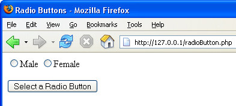

PHP and HTML Radio Buttons
A Radio Button is a way to restrict users to having only one choice. Examples are : Male/Female, Yes/No, or answers to surveys and quizzes.
Here's a simple from with just two radio buttons and a Submit button:

You can find the code for the page above in the files you downloaded, in the scripts folder. The file is called radioButton.php. Open it up in your text editor. If you want to copy and paste it, click below.
Make sure you save your work as radioButton.php, as that's where we're posting the Form – to itself.
To get the value of a radio button with PHP code, again you access the NAME attribute of the HTML form elements. In the HTML above, the NAME of the Radio buttons is the same – "gender". The first Radio Button has a value of "male" and the second Radio Button has a value of female. When you're writing your PHP code, it's these values that are returned. Here's some PHP code. Add it to the HEAD section of your HTML:
<?PHP
$selected_radio = $_POST['gender'];
print $selected_radio;
?>
This is more or less the same code as we used for the text box! The only thing that's changed (apart from the variable name) is the NAME of the HTML form element we want to access – "gender". The last line just prints the value to the page. Again, though, we can add code to detect if the user clicked the Submit button:
if (isset($_POST['Submit1'])) {
$selected_radio = $_POST['gender'];
print $selected_radio;
}
Again, this is the same code you saw earlier – just access the form element called 'Submit1' and see if it is set. The code only executes if it is.
Try out the code. Select a radio button and click Submit button. The choice you made is printed to the page - either "male" or "female". What you will notice, however, when you try out the code is that the dot disappears from your selected radio button after the Submit is clicked. Again, PHP is not retaining the value you selected. The solution for radio Buttons, though, is a little more complex than for text boxes
Radio buttons have another attribute - checked or unchecked. You need to set which button was selected by the user, so you have to write PHP code inside the HTML with these values - checked or unchecked. Here's one way to do it:
The PHP code:
<?PHP
$male_status = 'unchecked';
$female_status = 'unchecked';
if (isset($_POST['Submit1'])) {
$selected_radio = $_POST['gender'];
if ($selected_radio = = 'male') {
$male_status = 'checked';
}
else if ($selected_radio = = 'female') {
$female_status = 'checked';
}
}
?>
The HTML FORM code:
<FORM name ="form1" method ="post" action ="radioButton.php">
<Input type = 'Radio' Name ='gender' value= 'male'
<?PHP print $male_status; ?>
>Male
<Input type = 'Radio' Name ='gender' value= 'female'
<?PHP print $female_status; ?>
>Female
<P>
<Input type = "Submit" Name = "Submit1" VALUE = "Select
a Radio Button">
</FORM>
Did we say a little more complex? OK, it's much more complex than any code you've written so far! Have a look at the PHP code inside the HTML first:
<?PHP print $female_status; ?>
This is just a print statement. What is printed out is the value inside of the variable. What is inside of the variable will be either the word "checked" or the word "unchecked". Which it is depends on the logic from our long PHP at the top of the page. Let's break that down.
First we have two variables at the top of the code:
$male_status = 'unchecked';
$female_status = 'unchecked';
These both get set to unchecked. That's just in case the page is refreshed, rather than the Submit button being clicked.
Next we have our check to see if Submit is clicked:
if (isset($_POST['Submit1'])) {
}
Exactly the same as before. As is the next line that puts which radio button was selected into the variable:
$selected_radio = $_POST['gender'];
We then need some conditional logic. We need to set a variable to "checked", so we have an if, else … if construction:
if ($selected_radio == 'male') {
}
else if ($selected_radio == 'female') {
}
All we're doing is testing what is inside of the variable called $selected_radio. If it's 'male' do one thing; if it's 'female', do another. But look at what we're doing:
if ($selected_radio == 'male') {
$male_status = 'checked';
}
else if ($selected_radio = = 'female') {
$female_status = 'checked';
}
If the 'male' button was clicked then set the $male_status variable to a value of 'checked'. If the 'female' option button was clicked then set the $female_status variable to a value of 'checked'.
So the code works because of the values inside of two variables: $male_status and $female_status.
Yes, the code is very messy – but radio Buttons can be a quite tricky, when you want to retain the value of the selected item. Speaking of tricky – checkboxes are up next!